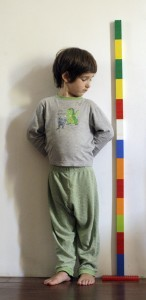

Pinterest
Instagram
ES
EN
DE
☰ Menü
Home
Das Haus
Zubehör
Dekoration
Faltanleitung
Illustration
Trinkflaschen
Bastelheft
App
Blog
Feste
Weihnachten
Ostern
Halloween
Fasching & Kostüme
Valentinstag
Geburtstag
Mutter-/Vatertag
Schulanfang
Jahreszeiten
Frühling
Sommer
Herbst
Winter
Was machen
Spielzeug
Spiele
Druckvorlagen
Essen & Rezepte
Dekoration
Malen
Experimente
Draußen
Lernen
Tiere
Geschenke & Schmuck
Bauen & Tricks
Weitere Ideen
Material
Papier
Karton
Papierrollen
Recycling
Steine
Blätter & Natur
Stoff & Nähen
Start
›
Blog
›
Aktivität
Aktivität
Kategorie
Aktivität
Sommerschätze
Aktivität
Mobile aus Obstkistenholz
Aktivität
Palmblattzelt
Aktivität
Bodypainting
Aktivität
Silhouetten mit der Sprühflasche
Aktivität
Durch die Schnüre
Aktivität
Hütte aus Tannenzapfen
Aktivität
Knöpfe auf Korkscheiben
Aktivität
Magnetspielzeug als Auftragsarbeit
Aktivität
Naturfarben
Aktivität
Messen mit Lego

Aktivität
Schiff auf einem Knetmeer
Aktivität
Das Alphabet lernen
Aktivität
Kistenschiff
Aktivität
Mensch ärgere dich nicht
Aktivität
Figuren mit Kokonmützen
Aktivität
Zaubertrank
Aktivität
Zauberstab für Elfen
Aktivität
Käferspiel
Aktivität
Fische aus Schilfblättern
Aktivität
Die kleine Raupe Nimmersatt
Aktivität
Namen aus Post-its
Aktivität
Zahlensuche auf der Straße
Aktivität
Flaschen-Drehscheibe
← Neuere
Seite 8 / 14
Ältere →